2021年北京市中考历史试题 原卷解析
2021年北京中考历史试题
第一部分
本部分共20题，每题1.5分，共30分。在每题列出的四个选项中，选出最符合题目要 求的一项。
1. 夏、商、西周三代是中华文明的第一个高峰期，这一时期精神文明的表征是甲骨文的应用，物质文明的集中表现则是
A. 打制石器B. 原始陶器C. 青铜铸造D. 瓷器烧制
【答案】C
【解析】
【详解】依据所学知识，夏、商、西周时期物质文明 集中表现是青铜铸造业的发达，青铜器种类丰富，数量众多，制作工艺高超，被誉为青铜时代，C正确，D排除；打制石器、原始陶器是在原始社会时期，AB排除。故选C。
集中表现是青铜铸造业的发达，青铜器种类丰富，数量众多，制作工艺高超，被誉为青铜时代，C正确，D排除；打制石器、原始陶器是在原始社会时期，AB排除。故选C。
2. 以下是中国古代一位历史人物年谱（部分）。对此解读正确的是
公元前 141年 | 公元前 136年 | 公元前 129年 | 公元前 127年 | 公元前 118年 | 公元前 87年 |
即皇帝位 | 置五经博士 | 派卫青等北击匈奴 | 颁布“推恩令” | 下令铸造五铢钱 | 崩，葬于茂陵 |
A. 该年谱用年号纪年
B. 秦始皇开创了皇帝制度
C. 该帝王在位35年
D. 汉武帝巩固大一统王朝
【答案】D
【解析】
【详解】根据所学可知，汉武帝时，颁布“推恩令”，削弱王国势力，汉武帝时，采取多种措施，使大一统国家得到巩固，故选D；材料中年谱不是用年号纪年，排除A；材料反映的是汉武帝，B不符合题意，排除；汉武帝在位54年，C错误。
3. 某班同学为体验我国古代一项伟大发明的工艺流程，进行了以下实践活动。这项发明

A. 对作战方式产生了巨大影响
B. 发展中医学的治疗理论
C. 促进了远洋航海技术的发展
D. 推动文化的传播和发展
【答案】D
【解析】
【详解】材料反映的造纸术的工艺流程，造纸术推动了文化的传播和发展，故选D；火药的发明对作战方式产生巨大影响，与造纸术无关，排除A；材料反映的是造纸术，B项与材料信息无关，排除B；指南针促进了远洋航海技术的发展，不符合题意，排除C。
4. 有者认为：安史之乱后唐朝能够延续,这项工程发挥了重要作用。它的功用不仅是南粮北调，更是把南北融为一体。材料中的“这项工程”是
A. 都江堰B. 灵渠C. 大运河D. 长城
【答案】C
【解析】
【详解】隋朝开凿大运河，促进了南北经济文化交流，也便利了南粮北调，故选C；都江堰位于四川，不符合“南粮北运”“把南北融为一体”，排除A；秦朝修灵渠，主要用于军事，不符合“南粮北运”，排除B；长城位于我国北方，修筑的目的是防御匈奴的进攻，不符合“把南北融为一体”，排除D。
5. 以下两组图片共同反映的主题是


A. 政治制度完备
B. 农业技术进步
C. 海外贸易发达
D. 文学艺术繁荣
【答案】B
【解析】
【详解】骨耜、曲辕犁是耕作工具，翻车、筒车是灌溉工具，都反映了农业技术的进步，故选B；材料中的农业工具，与政治制度、海外贸易、文学艺术无关，排除ACD。
6. 某同学梳理北京历史沿革（如下表）。与这三个朝代相对应的制度是
A. 分封制、行省制、郡县制
B. 郡县制、行省制、分封制
C. 行省制、分封制、郡县制
D. 分封制、郡县制、行省制
【答案】D
【解析】
【详解】西周实行分封制，燕国是诸侯国，秦朝实行郡县制，元朝实行行省制，故选D；秦朝实行郡县制，故A错误；西周实行分封制，BC错误。
7. 以下示意图呈现了中国古代对某一地区加强管辖的历史脉络。其中①处应为
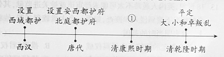
A. 平定噶尔丹叛乱B. 发起雅克萨之战C. 设置台湾府D. 设立军机处
【答案】A
【解析】
【详解】根据所学知识可知，公元前60年，西汉朝廷设置西域都护，对西域地区进行有效的管辖，今新疆地区正式隶属中央；唐太宗和武则天，在今新疆地区先后设立了安西都护府和北庭都护府作为管辖西域的最高行政和军事机构；乾隆帝平定回部大、小和卓叛乱后，设置伊犁将军，管辖包括巴勒喀什池在内的整个新疆地区。因此，题干示意图呈现了中国古代对新疆地区加强管辖的历史脉络。为了维护国家的统一，康熙皇帝三次率军亲征，在多次战役中打败噶尔丹，平定了叛乱，稳定了西北部边疆地区，故A项正确；康熙皇帝经过两次雅克萨之战击败沙俄侵略军，保卫了祖国东北边疆，与题干“新疆地区”不符，排除B项；1684年，清朝设置台湾府，巩固了祖国的东南海防，与题干“新疆地区”不符，排除C项；雍正帝时，设立军机处，使君主专制进一步强化，与题干“康熙时期”不符，排除D项。故选A项。
8. 从19世纪60年代起，经过30多年的努力，清政府创办了一批军事工业、民用工业。 在这一过程中成长起来的一批近代知识分子却认为西方的技术与制度是统一的，因此 他们介绍西方的法律和制度,呼吁从制度上进行变革。材料反映的史实是
A. 虎门销烟、第一次鸦片战争
B. 太平天国运动、第二次鸦片战争
C. 洋务运动、维新变法
D. 甲午中日战争、义和团运动
【答案】C
【解析】
【详解】19世纪60年代洋务运动开始，创办了一批军事工业、民用工业，维新派认为西方的技术与制度是统一的，主张学习西方政治制度，开展维新变法运动，故选C；1839年虎门销烟，1840年第一次鸦片战争，A项时间不符合题意，排除；太平天国运动是1851年洪秀全领导的农民起义，不符合“从19世纪60年代起”“清政府创办了一批军事工业、民用工业”，排除B；1894年甲午中日战争爆发，不符合“从19世纪60年代起”，排除D。
9. 下侧是作家叶圣陶1911年日记的部分内容，这反映出
10月12日，课毕后阅报纸，见专电栏中有云，武昌已为革（命）党所据
14日，急阅报纸，见长沙、重庆均为革（命）党所据
26日，课毕后阅报纸，如南昌、西安亦已得手……广东亦有独立之说
A. 辛亥革命的原因B. 辛亥革命的发展
C. 辛亥革命的胜利D. 北伐战争的进程
【答案】B
【解析】
【详解】日记内容反映的是1911年10月10日武昌起义（辛亥革命）后，各地纷纷响应，是辛亥革命的发展，故选B；1911年10月10日辛亥革命已经爆发，日记内容不是辛亥革命的原因，排除A；辛亥革命胜利指推翻清王朝，结束封建君主专制制度，建立了资产阶级共和国，C项不符合题意，排除；1926年北伐战争，排除D。
10. 以下书籍出版于20世纪三四十年代,此类书籍在当时大量出版意在
时间 | 1932年 | 1936年 | 1940年 | 1940年 | 1944年 |
书名 | 《五千年来中华民族爱国魂》 | 《民族英雄评传》系列 | 《中国历史上的民族英雄》 | 《民族英雄诗话》 | 《中国民族女英雄传记》 |
A. 宣传民主科学，开展新文化运动
B. 反对专制独裁，抨击北洋军阀统治
C. 弘扬爱国精神，致力于抗日救亡
D. 争取和平民主，推动国共两党谈判
【答案】C
【解析】
【详解】1931年九一八事变，中国开始抗日斗争，20世纪三四十年代大量出版宣传、介绍民族英雄的书籍，意在弘扬爱国精神，致力于抗日救亡，故选C；1915年新文化运动宣传民主科学，A时间不符合题意，排除；1928年东北易帜，标志北洋军阀统治已经结束，排除B；D项是1945年的重庆谈判，排除。
11. 漫画反映出
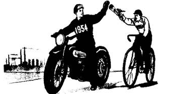
《敬祝进步》（改绘）
1954年说:“你好啊，你的任务超额完成啦！ ”
1953年说：“哈!我相信你”
A. 人民解放战争在全国的胜利
B. 封建土地制度废除后的喜悦
C. 建设社会主义工业化的信心
D. 家庭联产承包责任制的实行
【答案】C
【解析】
【分析】
【详解】结合所学可知，1953年我国开始一五计划，目标之一是建立社会主义工业化的基础，“哈!我相信你”“你的任务超额完成啦！”说明对建设社会主义工业化充满信心，故选C；1949年人民解放战争已经在全国的胜利，排除A；1950年土地改革废除了封建土地制度，排除B；1978年开始实行家庭联产承包责任制，排除D。
【点睛】
12. 1982年通过的《中华人民共和国宪法》增加了设立特别行政区的规定。据此制定的法律明确了特别行政区是中华人民共和国不可分离的部分，保持原有的资本主义制度和生活方式。这项宪法规定
A. 有利于民族区域自治制度确立
B. 标志着对外开放新格局最终形成
C. 说明国家重视科学技术的发展
D. 为“一国两制”实施提供法律依据
【答案】D
【解析】
【详解】结合所学知识。20世纪80年代，邓小平针对祖国统一大业提出了“一国两制”的方针，主张在“一个中国”的前提下，香港、澳门、台湾回归祖国后可设立特别行政区，保持原有的资本主义制度和生活方式长期不变，因此1982年宪法的这项规定为“一国两制”实施提供了法律依据，D正确；民族区域自治制度是在少数民族聚集地区设立自治机关，保障少数民族当家做主的权利，与港澳台回归问题无关，A排除；设立特别行政区是“一国两制”解决祖国统一大业的内容，与对外开放或科学技术没有直接关系，BC排除。故选D。
13. 18世纪，英国人通常不太可能未经审讯就被关进监狱，其住宅也不会在没有法官授权 令的情况下遭到侵入和搜查，如果一个大贵族犯了罪，他将和其他人一样被带到法庭 上。这表明当时的英国
A. 议会制定的法律具有最高权威
B. 推崇“君权神授”，君王专断独裁
C. 联邦政府与地方政府分享权力
D. 推行福利政策，建立社会保障制度
【答案】A
【解析】
【详解】18世纪，英国实行君主立宪制，议会掌握立法权，“英国人通常不可能未经审讯就被关进监狱”“一个大贵族犯了罪，他将和其他人一样被带到法庭上”体现了法律至上，法律具有最高权威，故选A；1689年《权利法案》颁布，确立君主立宪制，君主的权力受到宪法制约，排除B；C项反映的是联邦制，与材料信息无关，排除；材料信息与福利政策无关，排除D。
14. 19世纪中期，对工人阶级的问题做出以下回答的是
工人阶级的问题 | 回答 |
社会不公平的原因是什么 | 生产资料私有制 |
如何改变不公平的现状 | 无产阶级用暴力推翻资产阶级而建立自己的统治 |
A. 《独立宣言》B. 《共产党宣言》
C 《联合国家宣言》D. 《北大西洋公约》
《联合国家宣言》D. 《北大西洋公约》
【答案】B
【解析】
【详解】依据题干“19世纪中期，对工人阶级的问题做出以下回答”和所学知识，1848年或19世纪中期，马克思和恩格斯所著的《共产党宣言》发表，标志马克思主义的诞生，宣言阐明社会发展的客观规律，揭示了无产阶级的历史使命，即用暴力推翻资产阶级统治，建立无产阶级政权，从而解放和发展生产力，B正确；《独立宣言》发表于美国独立战争期间的1776年，属于18世纪后期，标志美国的诞生，是资产阶级革命中的文献，A排除；1942年初，中美英苏等国签署《联合国家宣言》，正式成立世界反法西斯同盟，此时是20世纪中期，C排除；1949年，美国联合西欧等资本主义国家签署《北大西洋公约》，建立北约组织，这是冷战在军事上的表现，此时是20世纪中期，D排除。故选B。
15. 19世纪中期，西欧资本主义力量增强，其他地区也出现了一系列有利于资本主义发展的变革，例如美国内战中废除黑人奴隶制、日本明治维新。同一时期类似的历史事件还有
A. 法国大革命
B. 俄国农奴制改革
C 俄国十月革命
D. 印度非暴力不合作运动
【答案】B
【解析】
【详解】根据所学可知，1861年俄国农奴制改革，使俄国走上了资本主义的道路，故选B；1789年法国大革命，1917年俄国十月革命，AC两项时间不符合题意，排除；20世纪二三十年代印度非暴力不合作运动，反对英国的殖民统治，D项不符合题意，排除。
16. 1831年，达尔文随船（见图）进行环球航行,船长希 望达尔文能够找到科学论据来验证《圣经》的记载，没想 到旅行结束后，达尔文却得出了相反的结论°以下关于 达尔文这次航行的说法正确的是
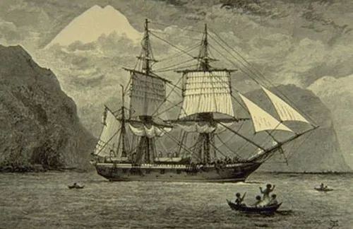
“小猎犬号”帆船
A. 首次证明了地圆学说
B. 提出了万有引力定律
C. 体现第二次工业革命的交通成就
D. 为提出进化论的观点积累了素材
【答案】D
【解析】
【分析】
【详解】“达尔文却得出了相反的结论”指生物进化论，材料说明达尔文这次航行为其提出进化论积累了素材，故选D；麦哲伦进行环球航行，首次证明了地圆学说，排除A；牛顿提出万有引力定律，排除B；19世纪70年代第二次工业革命开始，在交通领域的成就是汽车和飞机，C项不符合题意，排除。
【点睛】
17. 1907年《英俄协约》签订。学者蒙格指出，英国与俄国缔约的主要动机“是改变欧洲的力量对比，尤其要加上一个对付德国的砥码”。以上材料可用于研究
A. 第一次世界大战的背景
B. 经济大危机的根本原因
C. 第二次世界大战的影响
D. “冷战”对峙局面的形成
【答案】A
【解析】
【详解】英国与俄国缔约的主要动机“是改变欧洲的力量对比，尤其万安加上一个对付德国的砝码”，这反映了一战前三国协约军事集团的形成，是一战的背景，故选A；1929年暴发经济大危机，根本原因是资本主义社会的基本矛盾，不符合题意，排除B；1939－1945年第二次世界大战，C项不符合题意，排除；1955年华沙条约组织成立，标志“冷战”对峙局面形成，排除D。
18. 下表是20世纪二三十年代苏俄和美国政策调整的部分内容，二者的共同点包括
新经济政策 | 罗斯福新政 |
实行粮食税,与之前相比,税额降低了近 一半；向农民提供种子、农具和技术等； 农民可以自由买卖纳税后的剩余产品 | 建立了几十个委员会和管理局，兴办了许多公共工程，开展了大规模的救济工 作，国家支出达350亿美元 |
①改善人民生活 ②恢复发展经济 ③实施以工代赈 ④减少政府干预
A. ①②B. ①④C. ②③D. ③④
【答案】A
【解析】
【详解】根据所学知识可知，新经济政策从苏维埃俄国的国情出发，调动了生产者的积极性，迅速缓解了危机，巩固了工农联盟，促使国民经济稳步发展；新政期间，美国经济开始缓慢复苏，工业生产有所恢复，就业人数逐步增加，人民生活得到改善。据此可知，二者都缓解了危机，为经济的恢复和发展发挥了重要作用，改善人民生活，巩固了政权，因此，①②符合题意，故A项正确；罗斯福新政采取了以工代赈的措施，新经济政策没有这一项内容，因此，③不是二者的共同点，排除含有③的CD项；在农业政策上，二者都主张国家对农业生产和分配进行干预或调节，以调动积极性，促进农业恢复和发展，从而巩固政权，因此，④不符合史实，排除含有④的B项。故选A项。
19. 1971年10月25日，第26届联合国大会通过决议,恢复中华人民共和国在联合国的一切合法权利。以下是投票情况(部分)。这表明中国恢复在联合国的合法席位的背景是
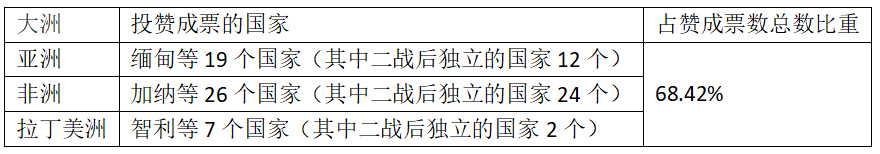
A. 亚非拉国家民族解放运动发展
B. 欧洲走上联合之路
C. 巴拿马收回了运河区全部主权
D. 世界贸易组织成立
【答案】A
【解析】
【详解】亚非拉发展中国家投赞成票总数的68.42％，说明中国能够恢复在联合国的合法席位的重要原因是发展中国家的支持，这和亚非拉国家民族解放运动发展有关，故选A；材料没有涉及欧洲国家，排除B；1999年巴拿马收回了运河区全部主权，C时间不符合题意，排除；1995年世界贸易组织成立，D项时间不符合题意，排除。
20. 绘制示意图梳理知识结构是历史学习的重要方法。以下示意图正确的是
A.
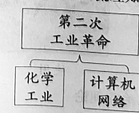
B. 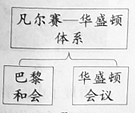
C.
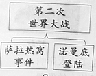
D.
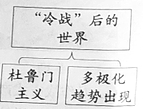
【答案】B
【解析】
【详解】依据题干示意图和所学知识，第一次世界大战结束后，帝国主义列强先后召开巴黎和会和华盛顿会议，形成了战后的国际关系新格局凡尔赛—华盛顿体系，B表述正确，符合题意；第二次工业革命时期出现了化学工业，但是计算机网络是第三次科技革命的成果之一，A排除；萨拉热窝事件是第一次世界大战的导火线，与第二次世界大战无关，C排除；杜鲁门主义是美国对苏联发动冷战的标志，多极化趋势出现也是在冷战时期的20世纪六七十年代，与“冷战”后的世界不符，D排除。故选B。
第二部分
本部分共4题，共40分。
21. 舞蹈承载多元文化，体现对美的追求。
材料一 以下是与中国古代舞蹈相关的文物。
文献1 | 文献2 | 文献3 |
一、我们的党定名为中国共产党： 二、我们党的纲领如下： 1.革命军队必须与无产阶级一起推翻资本家阶级的政权，必须援助工人阶级，直到社会阶级区分消除的 时候 | （政治局）扩大会一致 决定……红军渡过长 江，在成都之西南或 西北建立苏区根据地 毛泽东同志选为 （中央政治局）常委 | 把全党工作的着重点 和全国人民的注意力转移到社会主义现代 化建设上来……会议 高度评价了关于实践是检验真理的唯一标准问题的讨论 |
（1）从材料一中任选一则文献，说出相关会议名称及其意义。
材料二中国共产党建立丰功伟绩的历程，也是不断培育形成其伟大精神的历程。
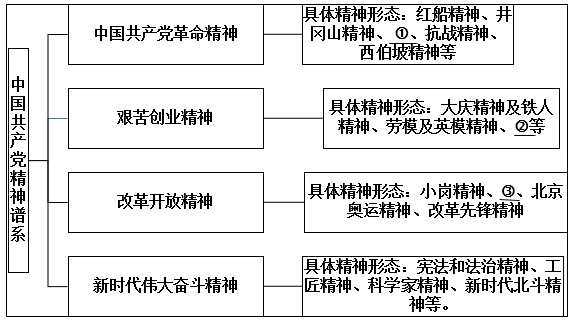
——整理自齐彪等《中国共产党精神及其谱系探析》
（2）将特区精神、长征精神和“两弹一星”精神填入材料二的相应位置。从这三种精神中任选其一，结合史实说出对这一精神内涵的理解。
材料三以下是习近平引用的有关民本思想的经典名句。
经典名句 | 学派 |
以百姓心为心。 | —《老子》 | ① |
乐民之乐者，民亦乐其乐；忧民之忧者，民亦忧其忧。 | ——《孟子》 | ② |
材料四 毛泽东提出“为人民服务”，邓小平强调“我是中国人民的儿子”中国共产党坚持人民主体地位，是将马克思主义与中国传统文化有机结合的结果与呈现。
——摘编自商志晓《中华传统文化与中国现代化进程》
（3）完成材料三的表格。习近平在党的十九大报告中提出“坚持以人民为中心”。综合以上材料，谈谈你对此的认识。
【答案】（1）文献1，1921年7月，中共一大召开，标志中国共产党的诞生，是中国历史上开天辟地的大事。自从有了中国共产党，中国革命的面貌就焕然一新了。
文献2，遵义会议，确立了以毛泽东为代表的马克思主义的正确路线在中共中央的领导地位，在极其危急的时刻，挽救了党，挽救了红军，挽救了革命，成为中国共产党历史上一个生死攸关的转折点，这次会议是中国共产党从幼年走向成熟的标志。
文献3，中共十一届三中全会作出了把党和国家的工作中心转移到经济建设上来，实行改革开放的历史性决策，是新中国成立以来党的历史上具有深远意义的伟大转折，开启了我国改革开放历史新时期。（任选一则，说出相关会议名称及其意义即可）。
（2）➀长征精神；➁“两弹一星”精神；➂特区精神。
（从这三种精神中任选其一，结合史实说出对这一精神内涵的理解即可）
如特区精神：1980年8月，国务院正式批准成立深圳经济特区，这是中国成立的第一个经济特区。经过几十年改革开放大潮的塑造和市场经济熔炉的锤炼，中国的经济特区不仅创造了举世惊叹的物质文明奇迹，也创造了“敢闯、敢冒、敢试、敢为天下先” 的特区精神。
长征精神，就是二万五千里长征中创造的革命精神，长征精神的基本内涵是：①把全国人民和中华民族的根本利益看得高于一切，坚定革命的理想和信念，坚信正义事业必然胜利的精神；②为了救国救民，不怕任何艰难险阻，不惜付出一切牺牲的精神；③坚持独立自主、实事求是，一切从实际出发的精神；④顾全大局、严守纪律、紧密团结的精神；⑤紧紧依靠人民群众，同人民群众生死相依、患难与共、艰苦奋斗的精神。
“两弹一星”工程是中国于20世纪50～60年代组织实施的，以研制导弹、原子弹和科学试验卫星为主要内容的重大国防工程。“两弹一星精神”的基本内涵是“热爱祖国、无私奉献，自力更生、艰苦奋斗，大力协同、勇于登攀”。
（3）➀道家；➁儒家。使我们认识到， “坚持以人民为中心”是中华民族的文化传统， 新时代坚持和发展中国特色社会主义，就必须坚持人民主体地位，坚持立党为公、执政为民，践行全心全意为人民服务的根本宗旨，把党的群众路线贯彻到治国理政全部活动之中，把人民对美好生活的向往作为奋斗目标，依靠人民创造历史伟业。
【解析】
【详解】（1）根据材料一中，三则文献，由“我们的党定名为中国共产党”，可知文献1与中共一大相关；由“在成都之西南或西北建立苏区根据地，毛泽东同志选为 （中央政治局）常委”，可知文献2与遵义会议相关；由“把全党工作的着重点 和全国人民的注意力转移到社会主义现代 化建设上来”，可知文献3与十一届三中全会相关；结合所学知识可知，文献1，1921年7月，中共一大召开，标志中国共产党的诞生，是中国历史上开天辟地的大事。自从有了中国共产党，中国革命的面貌就焕然一新了。文献2，遵义会议，确立了以毛泽东为代表的马克思主义的正确路线在中共中央的领导地位，在极其危急的时刻，挽救了党，挽救了红军，挽救了革命，成为中国共产党历史上一个生死攸关的转折点，这次会议是中国共产党从幼年走向成熟的标志。文献3，中共十一届三中全会作出了把党和国家的工作中心转移到经济建设上来，实行改革开放的历史性决策，是新中国成立以来党的历史上具有深远意义的伟大转折，开启了我国改革开放历史新时期。（任选一则，说出相关会议名称及其意义即可）。
（2）结合所学知识可知，特区精神，就是改革开放设立经济特区过程中创造的改革开放精神、长征精神，就是二万五千里长征中创造的革命精神、“两弹一星”精神，是在研制导弹、原子弹和科学试验卫星为主要内容的重大国防工程的艰苦创业精神。因此填入材料二的相应位置➀长征精神；➁“两弹一星”精神；➂特区精神。（从这三种精神中任选其一，结合史实说出对这一精神内涵的理解即可）
如特区精神：1980年8月，国务院正式批准成立深圳经济特区，这是中国成立的第一个经济特区。经过几十年改革开放大潮的塑造和市场经济熔炉的锤炼，中国的经济特区不仅创造了举世惊叹的物质文明奇迹，也创造了“敢闯、敢冒、敢试、敢为天下先” 的特区精神。
长征精神，就是二万五千里长征中创造的革命精神，长征精神的基本内涵是：①把全国人民和中华民族的根本利益看得高于一切，坚定革命的理想和信念，坚信正义事业必然胜利的精神；②为了救国救民，不怕任何艰难险阻，不惜付出一切牺牲的精神；③坚持独立自主、实事求是，一切从实际出发的精神；④顾全大局、严守纪律、紧密团结的精神；⑤紧紧依靠人民群众，同人民群众生死相依、患难与共、艰苦奋斗的精神。
“两弹一星”工程是中国于20世纪50～60年代组织实施的，以研制导弹、原子弹和科学试验卫星为主要内容的重大国防工程。“两弹一星精神”的基本内涵是“热爱祖国、无私奉献，自力更生、艰苦奋斗，大力协同、勇于登攀”。
（3）根据材料三《老子》、《孟子》，结合所学知识可知，春秋时期道家学派的创始人老子，主张“无为而治”；顺应自然；一切事物有对立面，可互相转换。他的学说集中在《老子》又称《道德经》一书中，这部书成为道家经典。战国时期儒家学派的主要代表人物孟子，他主张实行“仁政”，要求统治者不要过分盘剥人民;还提出“民为贵，社稷次之，君为轻”的思想，认为取得民心才能得天下，并反对一切非正义的战争。因此填写➀道家；➁儒家。习近平在党的十九大报告中提出“坚持以人民为中心”，使我们认识到， “坚持以人民为中心”是中华民族的文化传统， 新时代坚持和发展中国特色社会主义，就必须坚持人民主体地位，坚持立党为公、执政为民，践行全心全意为人民服务的根本宗旨，把党的群众路线贯彻到治国理政全部活动之中，把人民对美好生活的向往作为奋斗目标，依靠人民创造历史伟业。
22. 舞蹈承载多元文化，体现对美的追求
材料一 以下是中国古代舞蹈相关的文物
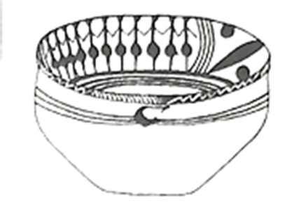 | 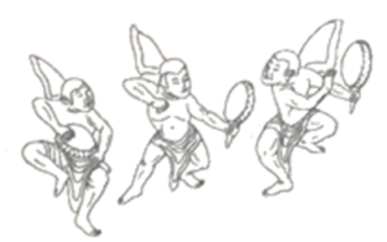 | 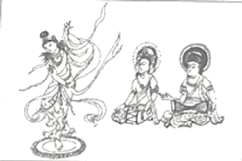 |
①舞蹈纹彩陶盆发现于青海省,属于新石器时代马家窑文化类型,距今约5000年 | ②西藏布达拉宫壁画(局部) 绘于17世纪,描绘了拉萨僧俗举行仪式,欢迎五世达赖喇嘛从北京返回西藏的场景 | ③敦煌莫高窟壁画(局部)绘于初唐，舞者赤脚袒腹，具有印度特点,伴奏所用的都昙鼓等来源于印度 |
（1）从材料一中找出能说明以下主题的文物。（写序号，多选、错选不得分）
中国境内文明的起源:
繁荣与开放的时代:
清朝统一多民族国家的巩固与发展:
材料二 北魏流行舞蹈“方舞”，舞者佩戴两件头饰，与汉族传统舞蹈“清商乐”相同； 下装为白裤、乌皮靴，与西域“龟兹乐”“安国乐”相似。“方舞”音乐安徐、闲雅，近于汉族传统，而脚下动作繁杂丰富，具有西域风格。
——摘编自袁禾《中国舞蹈通史》
（2）依据材料二，概括“方舞”所体现的时代特征。结合所学，举出这一时期体 现该特征的其他史实。
材料三 北宋民间舞蹈不仅出现于瓦子、酒楼，在城市街巷、乡村场院也发展起来。由若干表演者组成的舞队数量繁多，表演形式多样，并根据市场需求不断创新。文化夜市开始出现，市民在支付费用后，就可以观看舞蹈等表演。观舞写词也成为宋代文人 的风尚，据不完全统计，《全宋词》所录北宋时期描写舞蹈的词约有210首。
——摘编自李忻桐《北宋市民艺术研究——以宋人笔记为中心》
（3）依据材料三,概括北宋舞蹈艺术发展的特点，并分析其影响。
材料四 从古罗马流传下来的舞蹈传统在中世纪被禁止。14、15世纪人性、个性的解放使人们可以率性而舞，被教会禁止的双人群蹈开始盛行。舞蹈活动是如此地普及与频繁，以至于教会不得不承认肄蹈的作用，放松对群蹈的限制。
——摘编自瓦尔特-索雷尔《西方舞蹈文化史》等
（4）依据材料四，说出14、15世纪前后欧洲舞蹈地位的变化。结合所学,说明变化原因。
【答案】（1）①③②
（2）魏晋南北朝时期民族融合加强。北魏孝文帝改革，大力推行汉化政策，推动了北魏的封建化，也促进了北方民族融合。
（3）舞蹈艺术发展迅速，打破了时间、空间的限制，舞队数量繁多，表演形式多样，并根据市场需求不断创新。丰富了市民的娱乐文化生活，影响了宋词的创作。
（4）由被禁止到开始盛行。文艺复兴弘扬人文主；商品经济与资本主义萌芽的发展；市民阶层的壮大；教会势力的相对衰落。
【解析】
【详解】（1）从材料一中找出能说明以下主题的文物，①属于新石器时期时代，对应中国境内文明的起源；②描绘于17世纪，对应清朝前期统一多民族国家的巩固与发展；③绘于初唐，对应唐朝繁荣与开放的时代。
（2）依据材料二“……近于汉族传统，而脚下动作繁杂丰富，具有西域风格”概括“方舞”所体现时代特征是魏晋南北朝时期民族融合加强。列举史实：北魏时期孝文帝改革，大力推行汉化政策，学习汉人文化，推动了北魏的封建化以及北方民族大融合。
（3）依据材料三概括北宋舞蹈艺术发展的特点，据“北宋民间舞蹈不仅出现于瓦子、酒楼，在城市街巷、乡村场院也发展起来”“文化夜市开始出现”可知舞蹈艺术发展迅速，打破了时间、空间的限制，据“由若干表演者组成的舞队数量繁多，表演形式多样，并根据市场需求不断创新”可知舞队数量繁多，表演形式多样，并根据市场需求不断创新。依据材料三分析其影响，据“市民在支付费用后，就可以观看舞蹈等表演”可知丰富了市民的娱乐文化生活，，据“观舞写词也成为宋代文人的风尚”可知影响了宋词的创作。
（4）依据材料四“从古罗马流传下来的舞蹈传统在中世纪被禁止。14、15世纪人性、个性的解放使人们可以率性而舞”，说出14、15世纪前后欧洲舞蹈由被禁止到开始盛行。依据材料四“14、15世纪人性、个性的解放使人们可以率性而舞”可知与文艺复兴佛弘扬人文主义有关，再结合所学知识，原因还有这一时期商品经济和资本主义萌芽的发展，市民阶层的壮大，以及教会势力的相对衰落。
23. 巧克力生产、消费的变化是一部浓缩的历史。
材料一
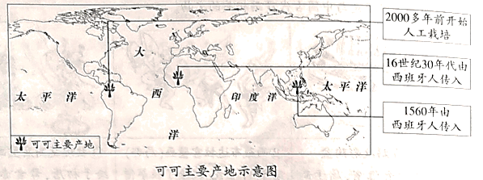
（1）可可是制作巧克力的基本原料、依据材料一，指出可可的栽培起源地（多选、错选不得分）
①美洲 ②非洲 ③亚洲
（2）结合所学，说明可可从栽培起源地向外传播的背景
材料二17世纪后欧美地区巧克力的生产和消费
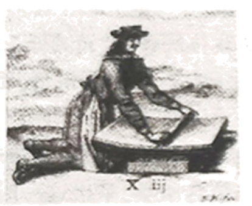 17世纪末研磨可可豆 的场景。这是当时普遍 使用的加工方式 | 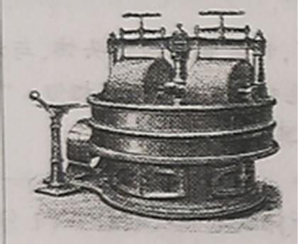 19世纪末20世圮初德国制造的巧克力搅拌机 | 巧克力起初只有精英和富裕阶 层能够享用。19世纪初，一磅 巧克力的价钱相当于一名普通 女工3天的工资。工厂通过工 艺流程的改进使巧克力成为大 众能消费得起的产品。 ——抽编自索菲• D.科 《巧克力：一部真实的历史》 |
（3）依据材料二，概括巧克力消费的变化，结合所学，分析变化原因
材料三中国巧克力线上市场规模（亿元）
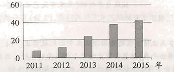
——数据整理自《巧克力市场报告》（2016年）
（4）依据材料三,指出中国巧克力线上市场规模的发展趋势结合所学，说出这一趋势出现的背景。
【答案】（1）①
（2）新航路开辟打破世界各大洲先被隔离的状态；哥伦布发现美洲新大陆；16世纪西班牙和葡萄牙分割世界，开始了大规模的殖民掠夺和扩张；黑奴贸易的开展；
（3）变化：从奢侈品变成了大众能消费的起的普通商品。原因：第二次工业革命的开展，使得技术水平提升，改进了生产工艺，提高了生产效率，降低了巧克力的价格；交通运输事业的进步降低了原材料的运输价格；19世纪末20世纪初，工人运动的开展促使资本主义生产关系的调整，改善了工人阶级待遇。
（4）趋势：2011-2015年中国巧克力线上市场规模持续扩大。背景：计算机网络技术广泛应用;中国社会经济发展；人民生活水平提高。
【解析】
【详解】（1）根据材料一“2000多年前开始人工栽培”可知可可的发源地在①美洲。根据所学知识可知可可喜生于温暖和湿润的气侯，原产于美洲中部及南部，并广泛栽培于全世界的热带地区。
（2）根据材料一“16世纪30年代西班牙人”，“1650年西班牙人”可知随着新航路的开辟，世界各大洲先被隔离的状态被打破了，尤其是以哥伦布为首的航海家们首先发现了旧大陆人们未曾到过的美洲大陆，由此才将美洲的作物传入了旧世界。并且伴随着16世纪，葡萄牙和西班牙分割主宰世界，开始进行大规模的殖民扩张和殖民掠夺，这在客观上加强了世界的联系，并将原产地在美洲的物种带到了殖民地，尽管殖民者们是为了发展种植园经济，为自己谋取利益，进行资本原始积累。
（3）根据材料二“巧克力起初只有精英和富裕阶层能够享用”，“使巧克力成为大众能消费得起的产品”可知巧克力从一种只有富人才能享用的奢侈品变成了大众能消费的起的普通产品；根据材料二以及所学知识我们可知，一方面17世纪的巧克力制作是纯手工，但是到了19世纪末20世纪初，伴随着第二次工业革命，人类进入了电气时代，对于巧克力的制作开始逐步用机器代替人工，这就大大提高了生产线率，降低了生产成本，从而降低了巧克力的价格。另一方面，由于欧洲不是巧克力的原材料可可的产地，需要从热带地区进口，所以交通运输成本就成了制约可可价格的重要因素，第二次工业革命中，交通运输工具的进步使得远洋运输事业快速发展，降低了交通运输成本。同时由于19世纪末20世纪初工人运动风起云涌，资产阶级为了维护自己的统治不得不进行社会福利改革，提高工人阶级的待遇，提高工人阶级的购买力。
（4）根据材料三的柱状图可以看出中国巧克力线上市场规模的发展趋势是迅速增长；从根本上来讲这是由于改革开放的进一步进行促使中国经济快速发展，人民收入和生活水平快速发展。从时代角度来讲，2011至2015年正是中国4G网络快速铺开的时候，由此催生了互联网产业和线上市场的快速增长。2011至2015年中国为了摆脱美国次贷危机的影响，大规模的进行道路等基础设施的建设，大大的降低了物流的成本。同时这一时期一带一路战略提出，促进了中国与世界的联系，进一步促进了中国的发展。
24. 北京文化底蕴深厚.发展活力强劲，正在成国际交往中心
材料一阿尼号（1244 - 1306），尼泊尔人，设计并主持定造北京妙应寺白塔
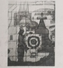 | 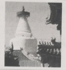 | 至元十六年年，阿尼哥建成万安寺（妙应寺）白塔。皇帝（忽必烈）参观后大喜，赐给阿尼哥大都附件一万五千亩良田等 |
①现代璧画艺术性地表现了阿尼哥设计、修建妙应寺白塔 | ②妙应寺白塔具有印度早 期佛塔特征，这是中原地区最早的此类建筑 | ③阿尼哥原碑文（摘译）由元朝文臣程钜夫必烈之命撰写 |
（1）从材料一中选出研究阿尼哥事迹可信的两则材料（写序号，多选、错选不得分）依据材料，概述元代中外交流的表现
材料二英国外交官威妥玛为外国人学习汉语编写了一部教材《语言自迹集》， 1867年出版。该书序言写道,中国方言众多，北京官话(别除了土话成分的北京话)无论在京城还是在汉口等地“都一样能被理解”，因此选它为汉语教学标准音。该书实录了当时的北京官话，供读者练习,例如:
“人生在世，头一件要紧的是学，念书呢.特为的是明白道理
“各样儿的东西，必得爱惜俭省才是过日子的道理啊！”
"为人子的，应该想着父母的劳苦养活的嗯,
——摘编自宋桔《语言自遂集〉的文献和语法研究》
（2）依据材料二，概括威妥玛选择北京官话作为汉语教学标准的原因从当时和现今两个角度分析《语言自逐集》的价值
材料三中华人民共和国成立后，北京在国际交往方面的主要职能是把国家的外交工作服务好、保障好。1985年，城市经济体制改革拉开序幕。北京通过城市发展，吸引了大量跨国公司和国际金融贸易活动，在国际资本流动和技术合作中产生日益重要的影响力。尤其是2008年奥运会成功举办，北京作为世界级中心城市的影响力迅速增加。
——摘端自周鑫宇《国际交往中心建设的新内涵》
（3）依据材料三概括1985年前后北京在国际交往方面职能的变化。
（4）《北京城市总体规划(2016年-2035年) 》指出，北京应成为拥有优质国际交住环境的大国首都，成为彰显文化自信与多元包容魅力的世界文化名城。作为北京市民，说说你可以为实现以上目标做出哪些努力。
【答案】（1）②③ 表现:印度建筑风格传入中原地区;外来的科学技术与文化在元朝受到重视。
（2）原因:北京官话在中国使用范围较广。 当时价值:有利于中外交流;有利于外国人了解中国文化。 现今价值:保存了清朝晚期北京语言习惯的史料;保存了清朝晚期北京生活习俗的史料;有利于了解清朝晚期北京人的思想观念;有利于了解19世纪中后期中外交流情况等。
（3）从以服务国家外交活动为主,到增加国际经济、文化交流等方面的职能。
（4）结合自身实际,写出为实现目标做出的努力。答案示例1:了解各国历史,尊重多元文化,提升国际交往能力。答案示例2:参观北京名胜古迹,深入了解古都历史,提升文化自信。
【解析】
【分析】
【详解】（1）②③属于实物史料，是研究阿尼哥事迹可信的史料。表现:根据“妙应寺白塔具有印度早期佛塔特征”得出印度建筑风格传入中原地区；根据“皇帝（忽必烈）参观后大喜，赐给阿尼哥大都附件一万五千亩良田等”得出外来的科学技术与文化在元朝受到重视。
（2）原因:根据“北京官话(别除了土话成分的北京话)无论在京城还是在汉口等地‘都一样能被理解’”得出北京官话在中国使用范围较广。当时价值:可从中外交流、外国人了解中国文化的角度分析总结。现今价值:可从保存清朝晚期北京语言习惯的史料；保存清朝晚期北京生活习俗的史料；有利于了解清朝晚期北京人的思想观念；有利于了解19世纪中后期中外交流情况等角度分析总结。
（3）根据“北京在国际交往方面的主要职能”“在国际资本流动和技术合作中产生日益重要的影响力”“2008年奥运会成功举办”，概括得出从以服务国家外交活动为主,到增加国际经济、文化交流等方面的职能。
（4）结合自身实际，写出为实现目标做出的努力。如：可从参观北京名胜古迹,深入了解古都历史,提升文化自信等进行说明。
【点睛】